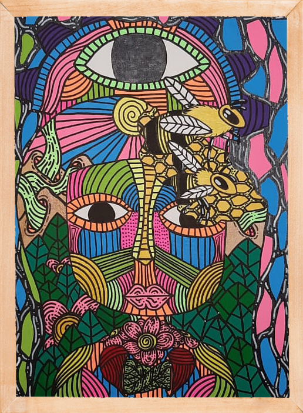

Cabrolaflor
Inicio
Otros Cuadros
Sobre el autor

Cuando se altera nuestro diario vivir, podemos experimentar muchas sensasiones. Estas imágenes son la representación de lo extrañas, y hermosas que son estas sensaciones, llenas de colores, figuras y formas. Pero también, llenas de sentimientos.
ver más